物品图鉴
模组里所有物品和方块（自动生成）。ID 是指令里用的名字，例如 /give @s orients_hotpot_chronicles:brick_stove。
灶台与锅 12 种
灶台
brick_stove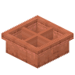
铜制田字火锅
copper_four_grid_hotpot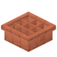
铜制九宫格火锅
copper_nine_grid_hotpot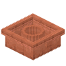
铜制O形鸳鸯锅
copper_o_yuanyang_hotpot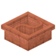
铜制S形鸳鸯锅
copper_s_yuanyang_hotpot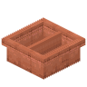
铜制直隔鸳鸯锅
copper_split_yuanyang_hotpot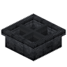
铁制田字火锅
iron_four_grid_hotpot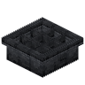
铁制九宫格火锅
iron_nine_grid_hotpot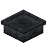
铁制O形鸳鸯锅
iron_o_yuanyang_hotpot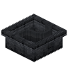
铁制S形鸳鸯锅
iron_s_yuanyang_hotpot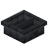
铁制直隔鸳鸯锅
iron_split_yuanyang_hotpot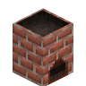
高灶台
tall_brick_stove火锅桌 22 种
金合欢木火锅桌
acacia_hotpot_table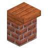
金合欢木高火锅桌
acacia_tall_hotpot_table竹火锅桌
bamboo_hotpot_table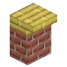
竹高火锅桌
bamboo_tall_hotpot_table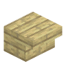
白桦木火锅桌
birch_hotpot_table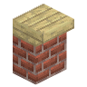
白桦木高火锅桌
birch_tall_hotpot_table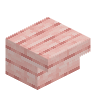
樱花木火锅桌
cherry_hotpot_table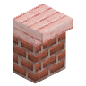
樱花木高火锅桌
cherry_tall_hotpot_table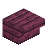
绯红木火锅桌
crimson_hotpot_table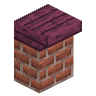
绯红木高火锅桌
crimson_tall_hotpot_table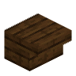
深色橡木火锅桌
dark_oak_hotpot_table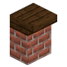
深色橡木高火锅桌
dark_oak_tall_hotpot_table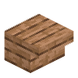
丛林木火锅桌
jungle_hotpot_table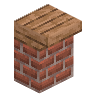
丛林木高火锅桌
jungle_tall_hotpot_table红树木火锅桌
mangrove_hotpot_table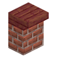
红树木高火锅桌
mangrove_tall_hotpot_table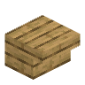
橡木火锅桌
oak_hotpot_table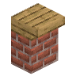
橡木高火锅桌
oak_tall_hotpot_table云杉木火锅桌
spruce_hotpot_table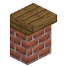
云杉木高火锅桌
spruce_tall_hotpot_table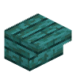
诡异木火锅桌
warped_hotpot_table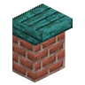
诡异木高火锅桌
warped_tall_hotpot_table凳子 22 种
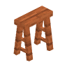
金合欢木条凳
acacia_bench金合欢木板凳
acacia_stool竹条凳
bamboo_bench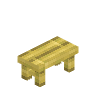
竹板凳
bamboo_stool白桦木条凳
birch_bench白桦木板凳
birch_stool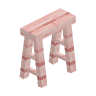
樱花木条凳
cherry_bench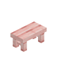
樱花木板凳
cherry_stool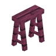
绯红木条凳
crimson_bench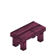
绯红木板凳
crimson_stool深色橡木条凳
dark_oak_bench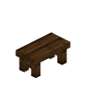
深色橡木板凳
dark_oak_stool丛林木条凳
jungle_bench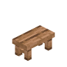
丛林木板凳
jungle_stool红树木条凳
mangrove_bench红树木板凳
mangrove_stool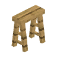
橡木条凳
oak_bench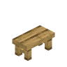
橡木板凳
oak_stool云杉木条凳
spruce_bench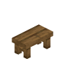
云杉木板凳
spruce_stool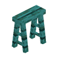
诡异木条凳
warped_bench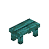
诡异木板凳
warped_stool盘子 30 种
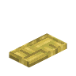
竹编八格大盘
bamboo_eight_slot_platter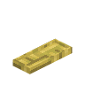
竹编五格长盘
bamboo_five_slot_long_plate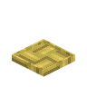
竹编四格方盘
bamboo_four_slot_square_plate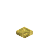
竹编小碟
bamboo_small_dish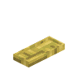
竹编三格长盘
bamboo_three_slot_long_plate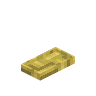
竹编双格盘
bamboo_two_slot_plate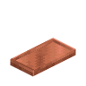
铜八格大盘
copper_eight_slot_platter铜五格长盘
copper_five_slot_long_plate铜四格方盘
copper_four_slot_square_plate铜小碟
copper_small_dish铜三格长盘
copper_three_slot_long_plate铜双格盘
copper_two_slot_plate铁八格大盘
iron_eight_slot_platter铁五格长盘
iron_five_slot_long_plate铁四格方盘
iron_four_slot_square_plate铁小碟
iron_small_dish铁三格长盘
iron_three_slot_long_plate铁双格盘
iron_two_slot_plate石英八格大盘
quartz_eight_slot_platter石英五格长盘
quartz_five_slot_long_plate石英四格方盘
quartz_four_slot_square_plate石英小碟
quartz_small_dish石英三格长盘
quartz_three_slot_long_plate石英双格盘
quartz_two_slot_plate红陶八格大盘
terracotta_eight_slot_platter红陶五格长盘
terracotta_five_slot_long_plate红陶四格方盘
terracotta_four_slot_square_plate红陶小碟
terracotta_small_dish红陶三格长盘
terracotta_three_slot_long_plate红陶双格盘
terracotta_two_slot_plate蘸料台 12 种
金合欢木蘸料台
acacia_sauce_station竹蘸料台
bamboo_sauce_station白桦木蘸料台
birch_sauce_station樱花木蘸料台
cherry_sauce_station绯红木蘸料台
crimson_sauce_station深色橡木蘸料台
dark_oak_sauce_station铁蘸料台
iron_sauce_station丛林木蘸料台
jungle_sauce_station红树木蘸料台
mangrove_sauce_station橡木蘸料台
oak_sauce_station云杉木蘸料台
spruce_sauce_station诡异木蘸料台
warped_sauce_station汤碗与饮料 8 种
一碗清汤
clear_broth_bowl蘸料
dipping_sauce橙子饮料空瓶
empty_orange_drink_bottle植物蛋白饮料空瓶
empty_plant_protein_drink_bottle一碗菌汤
mushroom_broth_bowl橙子饮料
orange_drink植物蛋白饮料
plant_protein_drink一碗红汤
spicy_red_broth_bowl工具 4 种
竹筷
bamboo_chopsticks砧板
cutting_board铁菜刀
iron_kitchen_knife擀面杖
rolling_pin食材 36 种
牛脊肉
beef_loin吊龙
beef_loin_slice牛肉丸
beef_meatball香菜
cilantro香菜牛肉丸
cilantro_beef_meatball香菜鱼丸
cilantro_fish_ball香菜羊肉丸
cilantro_mutton_meatball香菜猪肉丸
cilantro_pork_meatball熟牛脊肉
cooked_beef_loin熟吊龙
cooked_beef_loin_slice熟牛肉丸
cooked_beef_meatball熟香菜牛肉丸
cooked_cilantro_beef_meatball熟香菜鱼丸
cooked_cilantro_fish_ball熟香菜羊肉丸
cooked_cilantro_mutton_meatball熟香菜猪肉丸
cooked_cilantro_pork_meatball熟肥牛卷
cooked_fatty_beef_roll熟鱼丸
cooked_fish_ball熟羊肉丸
cooked_mutton_meatball熟羊肉卷
cooked_mutton_roll熟猪肉丸
cooked_pork_meatball熟土豆片
cooked_potato_slice熟豆腐块
cooked_tofu_cube熟毛肚
cooked_tripe肥牛卷
fatty_beef_roll鱼丸
fish_ball羊肉丸
mutton_meatball羊肉卷
mutton_roll猪肉丸
pork_meatball土豆片
potato_slice捣碎的肉
pounded_meat一碗高汤
rich_stock_bowl小葱
scallion黄豆
soybean豆腐
tofu豆腐块
tofu_cube生毛肚
tripe